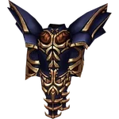
Đồ C1 → C5
Công dụng
- Trang bị nền trong giai đoạn luyện cấp; quái có thể rơi ra đồ có dòng hoàn hảo.
- Đồ hoàn hảo dư dùng làm nguyên liệu luyện Đá Tinh Luyện tại NPC Aida.
Nguồn nhận
Boss và quáiquái các bản đồ
Cửa hàngcửa hàng NPC
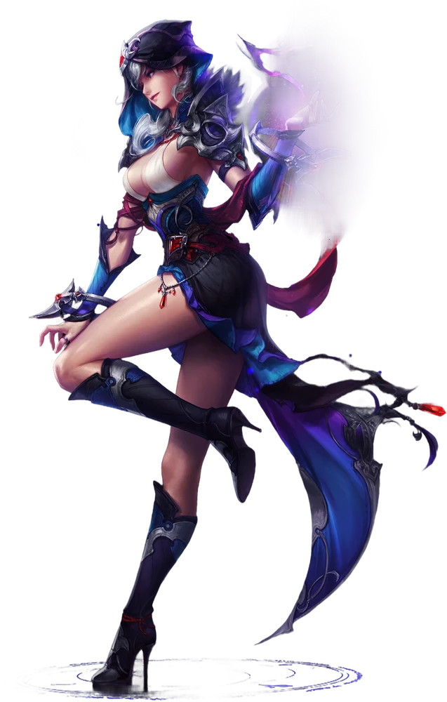
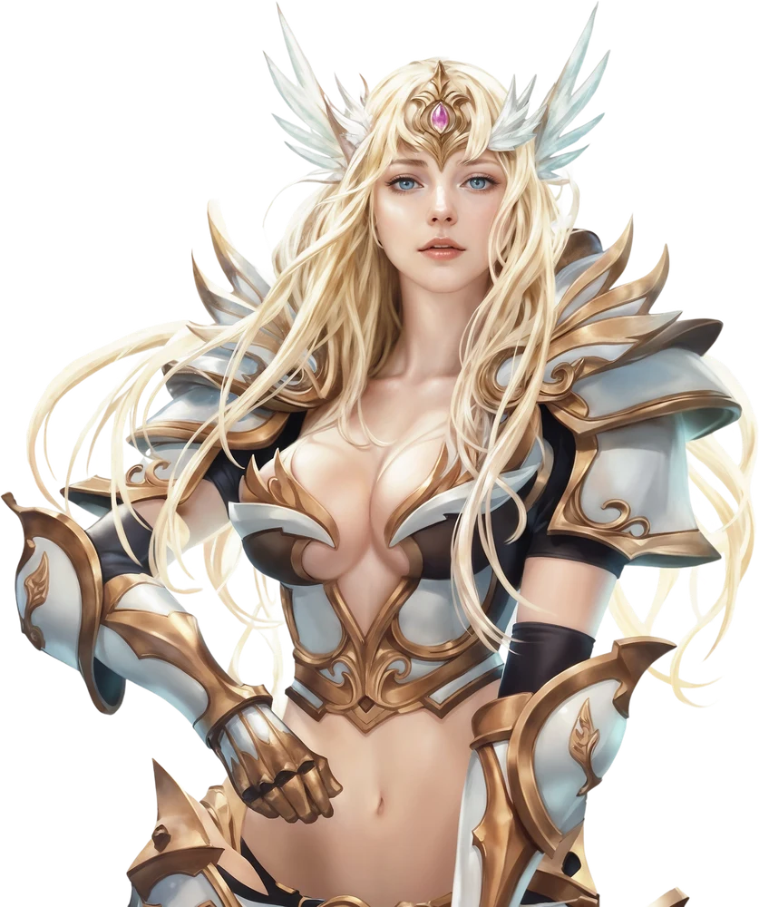
Hình ảnh, công dụng và nguồn nhận của từng vật phẩm
Cập nhật 22/10/2026 · Mức rơi: Chắc chắn · Rất cao · Cao · Trung bình · Hiếm · Rất hiếm
Không tìm thấy vật phẩm phù hợp. Vui lòng thử từ khóa ngắn hơn, ví dụ “ngọc” hoặc “sói”.
Từ đồ nền tới đỉnh đồ ngày mở cửa

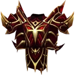
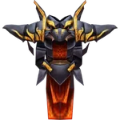
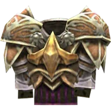
Tăng sức tấn công, khả năng chống chịu và cho phép bay
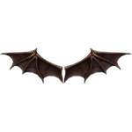
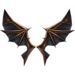
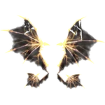
Cánh dùng 7 ngày, bán ở Cash Shop
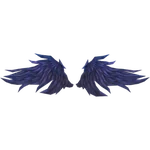
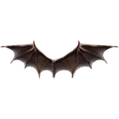
Nhẫn, dây chuyền, bông tai
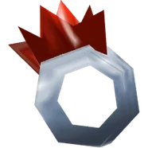
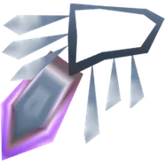
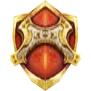
Trang bị ở ô 8, có thể dùng cùng một thú cưng ở ô 12
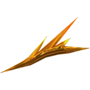
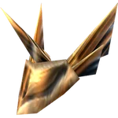
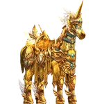
Trang bị ở ô 12
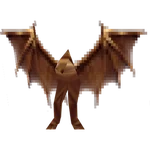
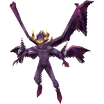
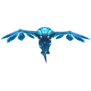
Dùng 7 ngày, bán ở Cash Shop
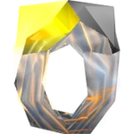
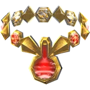
Nguyên liệu ép đồ và máy Chaos


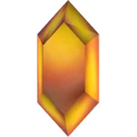


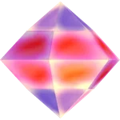
Mang đến Goblin Chaos cùng Bùa Chế Tạo để ghép thành ngọc


Đồ Công Thành, gia cường và dòng 380
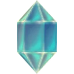
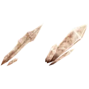
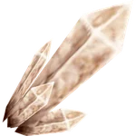
Tiến cấp, ép đồ, ghép ở máy Chaos
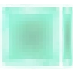
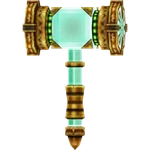
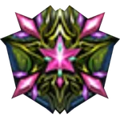

Cánh cấp 2 và cấp 3

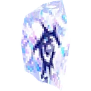
Nguyên liệu ghép sói, Sói Siêu Cấp, Vũ Khí Rồng
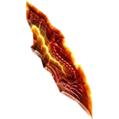
Nguyên tố, khuôn, xiên hạt và xiên hạt cấp 1 – 5
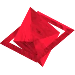
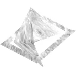
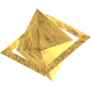
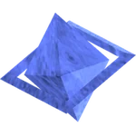
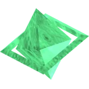
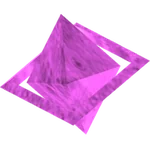
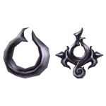
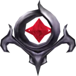
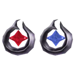
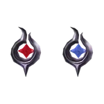
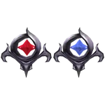
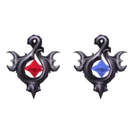
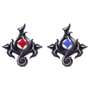
Bùa, vé, bình thuốc và gói tiện ích bán ở Cash Shop (WCoin C hoặc WCoin P, giá bằng nhau)
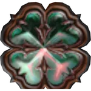
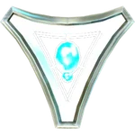

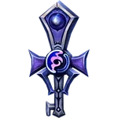
Vé vào Huyết Lâu, Quảng Trường Ác Quỷ, Hỗn Nguyên Lâu, Kalima, Doppelganger và Pháo Đài Gaion
Ném xuống đất để mở